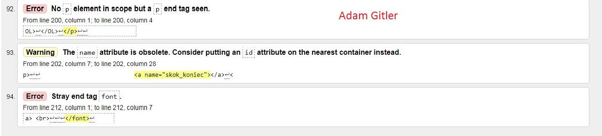
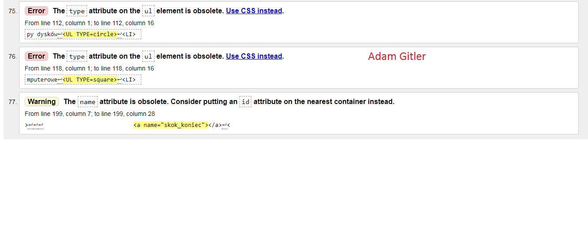

Walidacja (ang. validation) – w naukach technicznych i informatyce działanie mające na celu potwierdzenie w sposób udokumentowany i zgodny z
założeniami, że procedury, procesy, urządzenia, materiały, czynności i systemy rzeczywiście prowadzą do zaplanowanych wyników.

